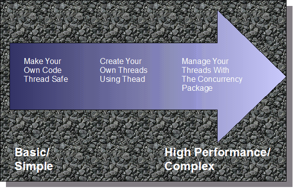
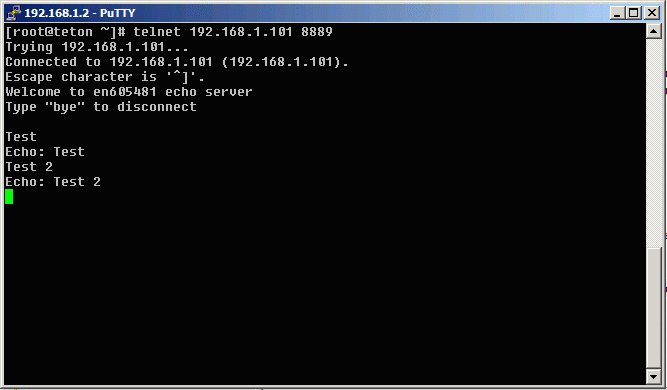
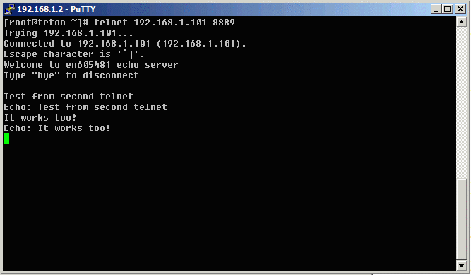
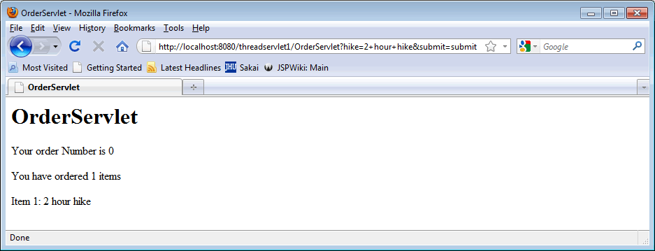
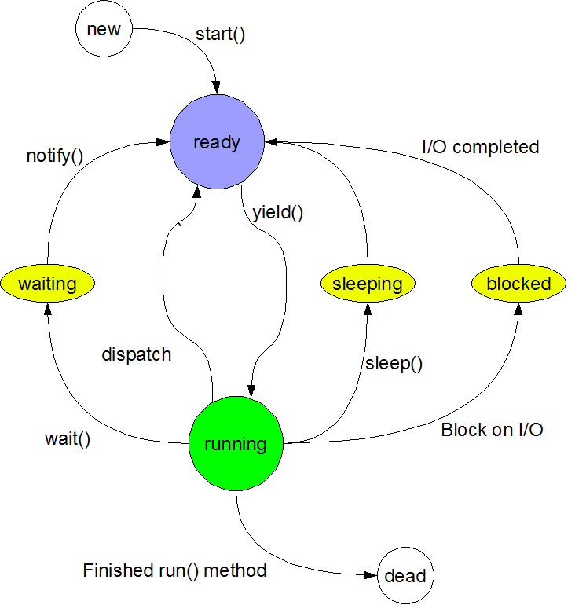

Multi-Threading
Required Reading
The Java Tutorial on Concurrent programming.
Why use multiple threads?
Remember back in the I/O and Network programming section, I mentioned that the example there had one big problem...that only one user could connect at a time? It would be a pretty big problem if only one person could connect to Google or Ebay at a time, wouldn't it?
To get around this, programmers originally used CGI to create a new process for each connection. This was very inefficient and used a lot of resources. A more efficient way of handling multiple connections is to handle new connections in a new Thread, which is much lighter weight than a full process. Of course, you never get something for free do you? In this case, using threads makes applications harder to design, debug and maintain.
There are two main approaches to implementing threads in Java
Which one should you use? The first one (from above) is the easiest, but it limits you in that your class must subclass Thread, which can really limit what you are trying to do. The second is more flexible, and leads itself for using some of the more advanced thread management classes introduced in JDK 1.5. Unfortunately, as you manage more complex threads...it gets to be more complex!

Java's main threads
It turns out that Java itself is inherently multi-threaded. In even a simple application there can be several threads. A thread dump of a running swing application showed the following threads:
The good thing is that these threads are designed to make it seem like you only have to deal with a main thread in your program. Many times you don't have to worry about dealing with multiple threads.
Making your own Thread
You'll need some cotton, a spinning wheel.... Okay, remember I talked about two methods for creating threads? The first way was to create a separate subclass of Thread. "But wait!" you say, " you said that making your own code Thread Safe was the most basic. Why aren't we doing that first?"
Good question, but basically, how do we learn how to make our code Thread safe without having another Thread? The first steps will be how to create a basic Thread. Management of those threads is the next level of complexity. So, the easiest first step is to make your own Thread so you can play with it.
public class MyThread extends Thread {
}
You put everything you want to be performed in the run method of the subclass.
public class MyThread extends Thread{
private boolean continueRunning=true;
public void run() {
while(continueRunning) {
// perform you task...
continueRunning = shouldWeStopTest();
}
}
}
Now you create an instance of your Thread subclass. You don't call run()!! Oh, something will happen, but only once, and not in a new Thread. It will just execute like any other method. To give your creation life, you need to call the start() method.
MyThread thread = new MyThread(); thread.start(); // it's alive!
Stopping a Thread
Once you've got your thread started, how to you stop it? If you took a look at the API, you may see some suspend() and stop() methods. These are deprecated for a good reason, and Sun is so adamant about you not using them, they go to a GREAT deal of trouble to caution you to not use them in the API.
What you should be doing in a thread is having the thread test a condition periodically to see if it should continue, and if it shouldn't to exit gracefully. The example above tries to show that with the continueRunning flag.
Making your Threads play nice
Nobody likes a bully, and threads are no exception. Once a thread is running, it is proper practice to let it sleep occasionally to give other threads a chance to step in and have their time in the CPU. This is done by using Thread.sleep(long millis). As mentioned in the reading, sleep() does not guarantee that a process will sleep for exactly that time, it shouldn't be used as an absolute timing factor.
You can interrupt a thread by calling the interrupt() method on the Thread object for the thread to be interrupted. The interrupted thread has to have methods (like sleep()) that throw InterruptedExceptions that can react to the interrupt. If your thread doesn't have methods that throw InterruptedException you can always call Thread.interrupted() to check for an interrupt manually.
If you have one thread that needs to wait for another thread to complete, you can use the join() method. This causes the thread calling join() on the other thread to wait until it is done to continue.
Thread a = new Thread(); a.start(); // do some stuff a.join();
The above code starts Thread "a" does some stuff, and then waits until "a" completes before it continues.
Download and open the Netbeans project threads. In this example I have a class called TestThread, which looks like this:
public class TestThread extends Thread {
private final String label; private final long delay; private final int repetitions;
public TestThread(String label, long delay, int repetitions) {
super();
this.label = label;
this.delay = delay;
this.repetitions = repetitions;
}
public void run() {
int i = 0;
while (i < repetitions) {
System.out.println(label + " repetition " + i);
i++;
try {
Thread.sleep(delay);
} catch (InterruptedException ie) {
System.out.println(label + " interrupted");
break;
}
}
System.out.println(label + " Thread ended");
}
}
This class lets you build a string with an arbitrary label, a delay between repetitions, and a maximum number of repetitions to print out a test message each repetition. This will let us test it in our test program.
In our Main class, we'll make three of the thread objects and set a different delay for each one.
// Thread T1, every second
Thread t1 = new TestThread("T1:", 1000, 5);
// Thread T2, every 2 seconds
Thread t2 = new TestThread("T2:", 2000, 5);
// Thead T3, every 5 seconds
Thread t3 = new TestThread("T3:", 5000, 5);
We'll start all three threads, but then the main program will wait for the 2nd thread to finish by using the join() method, and then interrupt the third.
t1.start();
t2.start();
t3.start();
try {
// wait for t2 to finish
t2.join();
// then interrupt t3 to watch what happens
t3.interrupt();
} catch (InterruptedException ie) {
System.out.println("main: couldn't join and interrupt");
}
So, you'll be able to see the three threads writing to stdout, and then watch the main thread kill the third thread after the second is finished.
... program output...
T1: repetition 4
T2: repetition 2
T1: Thread ended
T3: repetition 1
T2: repetition 3
T2: repetition 4
T2: Thread ended
T3: repetition 2
T3: interrupted
T3: Thread ended
BUILD SUCCESSFUL (total time: 13 seconds)
The volatile keyword
The volatile keyword is used with a variable that may be modified by multiple threads. This tells the compiler to fetch the value of the variable from the underlying data structure fresh each time, and not use a cached copy. If you don't use the volatile keyword, you may not be actually sharing a "shared" variable in a class used by multiple threads!
In addition, any operations on volatile variables are atomic in nature. This means that the entire operation is handled all at once, and cannot be interrupted by switching threads.
An Echo Server with multiple threads
Remember our echo server from the Sockets module? One of the problems it had was that it only handled one connection at a time. Now that we know how to spawn new threads, let's upgrade that example a wee bit.
Download and open the Netbeans Project threadedechoserver. In this project, I've added a new class, called ClientThread, that looks like this:
public class ClientThread extends Thread {
private final Socket socket;
public ClientThread(Socket clientSocket) {
this.socket = clientSocket;
}
public void run () {
BufferedReader in = null;
PrintWriter out = null;
try {
out = new PrintWriter(socket.getOutputStream(), true);
in = new BufferedReader(new InputStreamReader(socket.getInputStream()));
out.println("Welcome to en605481 echo server\n\rType \"bye\" to disconnect\n\r");
String outputLine = null;
while (!socket.isClosed()) {
outputLine = in.readLine();
if (outputLine == null) {
break;
}
if (outputLine.equalsIgnoreCase("bye")) {
break;
} else {
out.println("Echo: " + outputLine);
}
}
} catch (IOException ex) {
Logger.getLogger(ClientThread.class.getName()).log(Level.SEVERE, null, ex);
} finally {
try {
if (out != null) {
out.close();
}
if (in != null) {
in.close();
}
if (socket != null) {
socket.close();
}
} catch (IOException ex) {
Logger.getLogger(ClientThread.class.getName()).log(Level.SEVERE, null, ex);
}
}
}
}
Note that within the finally clause, we try to close alll of the file handles and sockets. This coding style ensure that no matter what happens within the try, the handles and sockets will be closed. You'll also notice the tests to see if the objects are null first. This is done because if within the try, not all of the objects are initialized, they may be null within the finally clause, causing unwanted NullPointerExceptions to be thrown.
This thread accepts a Socket and starts I/O streams on the socket. It will echo any keyboard input until it gets a line with only "bye" in it, then it disconnects. Note that this class does not have a ServerSocket.
If you look in the Main class of the project, you'll see the following code:
try {
serverSocket = new ServerSocket(8889);
} catch (IOException e) {
System.err.println("Could not listen on port: 8889.");
System.exit(1);
}
Socket clientSocket = null;
while (true) {
clientSocket = serverSocket.accept();
ClientThread thread = new ClientThread(clientSocket);
thread.start();
}
This establishes a ServerSocket object on port 8889, and then listens for connections with the serverSocket.accept() call. When it gets a connections, it passes the new socket it creates (it makes a new socket on a new port for the I/O) and hands the socket off to the ClientThread class to process the echoing of input.
If you run this application, and then bring up a command window and type
telnet localhost 8889
You will connect to the echo server and you can try it out. When one window is up, bring up a second shell and also try the connection. Notice how it can support two clients now...
The screenshots below show two clients for the same server


Using the Runnable interface
If you can subclass the Thread class and it works for you, great! More often than not, you need to subclass from something else, so since Java doesn't have multiple inheritance, you need to implement the Runnable interface.
As with Thread, you put the actions you want to implement in the run method of the class that implements the Runnable interface. You then construct an instance of the Thread class, but you pass your Runnable object as a constructor argument. Finally you call the start() method of the Thread class to start the thread running.
Foo f = new Foo(); // Foo implements the Runnable interface Threat t = new Thread(f); t.start();
The trouble with Threads
In our initial example, each instance had its own variables. Even our echo server didn't try to access an object outside of the current thread. In real life, servers, and Servlets are multi-threaded and have to worry about race conditions.
A race condition occurs when two threads try to access the same object at the same time, and chance determines which one wins the "race." Programs shouldn't work by chance and you can be guaranteed that when you test things, it will work fine, but when the demo comes, Murphy will have his say and it will fail miserably.
Remember, with multiple threads, two threads can, and will access an object at the same time. This means the same method may be being run by two different threads. Local variables will be okay, but class variables are subject to being accessed by both methods.
Download and open the Netbeans project threadservlet1. In this Servlet, our fictitious programmer tried to make a very simple shopping cart application. The attempt wasn't bad, until two people tried to access the site at the same time and Mr. Murphy decided to have some fun.

Above is the opening page, showing three options for guide-based hikes. The idea is that a customer will select one of the options and click on submit, which will produce the following output:

If you open the OrderServlet class, you'll see how the output is processed. The key few lines in the Servlet are:
String item = request.getParameter("hike");
if (item != null) {
orderManager.putInCart(item, session);
}
Which takes the ordered item and adds it to an OrderManager class that was initialized in the init() method of the Servlet. Remember, the init() method will be called only once when the Servlet is first loaded, and is a good way to initialize resources.
The OrderManager class manages the shopping cart information. It performs the following tasks
To make things easier (and easier to break!), there is a 10 second delay in the putInCart() method after we copy over the posibleOrderNumber. After the 10 seconds are up, the method then looks for the order in the OrderManager and goes from there. Yes, 10 seconds is a long time, but it allows you see a race condition without heavily loading up the system.
To test the race condition, you'll need a second browser to connect to the server. This is because if you use the same browser, you'll already have the correct order number in your current session, so you can't break the app!
If you bring up two browsers (I used Firefox and IE), connect to the server at http://localhost:8080/threadservlet1, you'll see the wonderful welcome screen on both browsers. Select a different hike from each browser, and then select submit, wait 2-3 seconds, and then select submit on the second browser.
Care to try to explain what you see? Hit the back button on either browser and then re-submit, adding things to the cart. You'll quickly see that you are sharing the same order number and the same cart...almost...can you see what is unique about the first connection, and explain why the second order didn't seem to go through? (Use this as a topic for the discussion forum).
Why do we have this problem, because the code is not thread-safe. The major problem is the assignment of the order number, which is used to identify the Order with the OrderManager.
Take a look at the code below:
public void putInCart(String item, HttpSession session) {
int possibleOrderNumber = orderNumber;
try {
Thread.sleep(10000);
} catch (Exception e) {
}
Order order = null;
// first get or set up cart and order number
if (item != null && item.length() > 0) {
Object orderNumObj = session.getAttribute(ORDER_ID);
// both orderNumObj = null for both
if (orderNumObj != null && orderNumObj instanceof Integer) {
possibleOrderNumber = ((Integer)orderNumObj).intValue();
order = getOrder(possibleOrderNumber);
if (order == null) {
// make a new number, and increment the number
order = makeOrder(possibleOrderNumber, session);
}
} else {
// so, we'll make an order object for each
order = makeOrder(possibleOrderNumber, session);
}
}
order.add(item);
}
First, note that the Thread.sleep(10000) is our artificial wait. It helps to demonstrate the problems with code that isn't thread-safe. The biggest culprit here is the fact that we are storing a possible new order number initially, doing some tasks, and then finally committing the number in the makeOrder() method. In the world of threads, this lets one thread come and grab a 'possible order number" of 0, and before it has committed the new order, another thread comes in and grabs the same "possible order number" of 0 again. It turns out that makeOrder() also uses some unsafe code that might pop up errors under heavily loaded situations.
So how do you make Thread-safe code. The first way is to do things in a single step, instead of spreading them over several lines of code. We could have just made a new order number immediately.
int possibleOrderNumber = orderNumber++;
However, you need to make sure that the operation is "atomic", that is, it is always done in one cycle of the CPU and can't be interrupted by another thread. Often times that is difficult to do.
The second way is to use Thread-safe classes. If you look in the OrderManager class, you'll notice the use of ArrayList. ArrayList is often used as a replacement for Vector, because it is faster and uses less resources, because...it isn't Thread-safe! OrderManager should use Vector instead of ArrayList if the code is not synchronized externally.
What do I mean by synchronized externally? Well, that is our third method. Java allows you to "synchronize" a section of code. This ensures that a thread completes the entire block of code before another thread can enter that block of code.
There are two main ways of synchronizing a block of code. It turns out there is a synchronized keyword that synchronizes an entire method. This is an easy fix, but can be expensive because you can unnecessarily block out too much code, making your code run slower because of unneeded waits.
The second way is to just synchronize an arbitrary chunk of code:
synchronized (some Object) {
// some code...
}
Once a thread enters the synchronized code, no other thread can enter any section of the code that is synchronized using the same "lock" object that is designated by the "some Object" object shown in the code snippet above.
When you start synchronizing code, you need to concentrate on "protecting" shared data that can be modified by methods within a class. Often times, just synchronizing one method or block of data may not be enough, you need to track down every way the data can be accessed by methods within the code.
Be careful if you use more than one object to lock synchronized code. There is a situation called deadlock. Image if you have Thread A acquires a lock that thread B needs before thread B can enter B's critical code section. Similarly, thread B acquires a lock that thread A needs before thread A can enter A's critical code section. Because neither thread has the lock it needs, each thread must wait to acquire its lock. Furthermore, because neither thread can proceed, neither thread can release the other thread's lock, and program execution freezes.
Thread life cycle
We are now going to learn a little more about the management of our newly created Threads. Below is a highly detailed, pleasing to the eye, picture of a Thread life cycle (and no, believe it or not, I was not an Art major).
Thread Lifecycle |
|  |
There are four thread states which a thread can exist.
Constructors
There are also four constructors for a Thread object.
Constructor |
arguments |
Thread() |
Default behavior. Subclass to use. |
Thread(Runnable runnable) |
Pass object implementing the Runnable interface to the thread. Once started, the thread will execute this object's run() method |
Thread(ThreadGroup group, Runnable Target) |
Creates a thread with the Runnable object, and places it in a ThreadGroup, which can be operated on as a set. |
Thread(String name) |
Creates a thread with the given name, useful for debugging |
You can safely ignore thread groups. Joshua Block, a Sun software architect, basically said "thread groups are best viewed as an unsuccessful experiment, and you may simply ignore their existence".
When threads run, they each have a priority. Threads at a higher priority will have more chance at a CPU than thread with a lower priority. Java Thread priorities set by the Thread.setPiriority() method are mapped to the underlying Operating System thread priorities. Windows has 7 priorities within 6 priority classes (which believe it or not create 32 levels of priority, and yes 7*6 does not equal 32...I guess it's Microsoft math).
Be careful. Different operating systems will treat threads differently. According to Microsoft documentation
The system treats all threads with the same priority as equal. The system assigns time slices in a round-robin fashion to all threads with the highest priority. If none of these threads are ready to run, the system assigns time slices in a round-robin fashion to all threads with the next highest priority. If a higher-priority thread becomes available to run, the system ceases to execute the lower-priority thread (without allowing it to finish using its time slice), and assigns a full time slice to the higher-priority thread.
Solaris treats thread differently, according to Solaris documentation:
The Solaris kernel is fully "preemptible". This means that all threads, including the threads that support the kernel's own activities, can be deferred to allow a higher- priority thread to run.
Solaris recognizes 170 different priorities, 0-169. Within these priorities fall a number of different scheduling classes:
- TS (timeshare): This is the default class for processes and their associated kernel threads. Priorities within this class range 0-59, and are dynamically adjusted in an attempt to allocate processor resources evenly.
- IA (interactive): This is an enhanced version of the TS class that applies to the in-focus window in the GUI. Its intent is to give extra resources to processes associated with that specific window. Like TS, IA's range is 0-59.
- FSS (fair-share scheduler): This class is share-based rather than priority- based. Threads managed by FSS are scheduled based on their associated shares and the processor's utilization. FSS also has a range 0-59.
- FX (fixed-priority): The priorities for threads associated with this class are fixed. (In other words, they do not vary dynamically over the lifetime of the thread.) FX also has a range 0-59.
- SYS (system): The SYS class is used to schedule kernel threads. Threads in this class are "bound" threads, which means that they run until they block or complete. Priorities for SYS threads are in the 60-99 range.
- RT (real-time): Threads in the RT class are fixed-priority, with a fix, wed time quantum. Their priorities range 100-159, so an RT thread will preempt a system thread
You probably get the idea that threads are a complex scheduling problem, and that different Operating Systems may treat them very differently. Java has three pre-defined priorities.
Thread value |
int value in Java SE 6 |
| Thread.MIN_PRIORITY | 1 |
| Thread.NORM_PRIORITY | 5 |
| Thread.MAX_PRIORITY | 10 |
If you assign a Thread with too low a priority, you can "starve" the thread, which means that if a higher-priority thread never terminates, sleeps or waits for I/O, the lower priority thread will never get a chance to run.
Sleep
The Thread class has a sleep() method. This ceases (blocks) a Thread's execution and waits until the time provided in the method call to "wake up" and begin execution again. While the Thread sleeps, it allows other Threads waiting to run to run without competition from the sleeping Thread.
sleep() is a common method used in Threads to prevent a running Thread from "starving" out other Threads by never giving them a chance to run.
Fixing our Servlet
So, we've covered how to start and stop threads, and just as important, how to synchronize blocks of code so that two threads don't execute the same block of code at the same time.
We can wrap some of the code in the putInCart() method with a synchronize to prevent the error we saw earlier. What would happen if we just wrapped the synchronized() call around the internals of putInCart(). Would it make your application thread safe? This is the hardest part of making an object thread safe...it is the determination of what to protect and what not to protect.
Download and open the Netbeans project threadservlet2. In this modification to threadservlet1, we have placed synchronized on the public methods of the OrderManager class. Why all of the public methods? Because putInCart, besides establishing the orderNumber, also creates an Order object and puts it in the ArrayList, which is NOT thread safe. When the other methods try to get an Order or orderNumber from our list of orders, they would be trying to access the ArrayList and it could be being changed by another thread. The heavy use of synchronized() methods isn't the best solution for performance, because it make a lot of the code synchronized when it doesn't need to...but it does the trick! If you try to access the Servlet at the same time, it no longer breaks.
If we really want to get tricky, we can make one more set of modifications to our Servlet. Most of our synchronized methods are because we are using an ArrayList, if we shift to using a Vector, which is already synchronized, all we need is to synchronized the code inside of putInCart. Download, open and run the Netbeans project threadservlet3 to see how this looks.
Hooray! No more mixed shopping carts!
Advanced Thread control
The rest of this module is designed to introduce you to additional Thread techniques. Realistically, since this may be the first time some of you are even looking at Java, this may not mean much now. What I want to do is at least just mention some of the other major points of Threads.
Once you get all of these threads running, you often need to know how to make them "play well with others". If your thread only runs once, like in our test servlet, you usually don't need to worry about starving other threads because each thread only lasts for a short duration. It's a little easier to just synchronize some code in a Servlet compared to a system designed to have multiple threads with multiple tasks. When you really need to pay attention is when you have some type of loop in your thread causing it to run for a potentially long time. In particular, threads should give other threads a chance to execute or you will starve those threads because once your loop starts running, it may never let another Thread have a chance.
If all of your threads are the same priority, a thread can call thread.yield() which suggests to the Thread scheduler that another thread might be able to run right then. Usually, yield() doesn't produce that reliable of results and is not used that often. Typically,
Wait() and Notify()
The wait() method, allows a thread to stop processing until some other condition occurs. Note that sleep() does not release the object lock when it is called. It may let other threads run, but if you have synchronized code, it still holds the lock on the code. When a thread enters wait(), the thread's execution is suspended, and the lock on that object is released. This means that some other thread can acquire the lock and run the synchronized code that the lock controls. It basically says "I've done all I can, I'll just wait here until somebody tells me I should go on..."
This use of wait() assumes you are in synchronized blocks of code, and makes no sense if you aren't. Ahh, but you say "How does control get transferred back to the code that called the wait()?"
Interrupting Threads
If you kept a reference to a Thread object, you can call interrupt() on the thread to free it from a sleep() or a blocked task. If you task doesn't have these situations, it can poll to see if an interrupt has been called with the Thread.interrupted() method.
Daemon Threads
So when does a Java application know when to quit? If we have all of these threads running around in even a simple application, do they all need to complete first?
The answer is that a Java application exits when the only Threads that are running are Daemon Threads. In a multitasking operating system, a Daemon is a computer program which runs in the background, typically not under the direct control of the user. Think of a Daemon Thread as a background thread that runs, but isn't a "primary" thread that you would normally associate with the execution of your program. If you set a Thread to be a Daemon thread, it will still run just as a typical thread, but it will not keep the JVM running if it is the only one running any more.
Remember way back in the Swing lecture, how we had to call setDefaultCloseOperation(JFrame.EXIT_ON_CLOSE) to have our application quit? The AWT thread is a non-Daemon thread, so even if we kill off our JFrame, it still runs and the JVM doesn't exit. When we set the default close operation, we tell the JFrame to kill off the AWT thread and thus let the JVM know that we are finished.
Summary of basic Thread methods.
Method |
Function |
| currentThread() | Returns a reference to the current thread |
| interrupt() | If the thread is executing a join, sleep, wait or is blocking, an InterruptedException is thrown. If not, it sets a flag so that Thread.interrupted() can detect the condition. |
| interrupted() | Checks to see if the currently executing thread has a request for interruption. It then clears the flag. |
| isinterrupted() | Checks, but doesn't clear, the interrupted flag |
| join() | Waits (sleeps actually) for another thread to complete. |
| isDaemon()/setDaemon() | sets/reads whether a Thread is a Daemon or not. |
| start() | Initializes the thread and then calls the Threads's run() method |
| run() | The method that executes when a Thread starts |
| sleep() | Causes currently executing thread to do a "non-busy" wait for the given time. |
Executors
Remember in the cool graphic at the top of this module? The one with the nifty gradient arrow showing more complex/powerful Thread management issues? It's time to take a look at the far right zone, the more powerful tools to manage Threads.
In JDK 1.5 (Java SE 5) the java.util.concurrent package was introduced. This allows much more efficient control of Threads within a multi-threaded system. A java.util.concurrent.Executor class was introduced. This class introduced a layer of indirection between a client and the execution of a task. This means that instead of directly making a Thread class and managing it yourself, you pass your Object that implements the Runnable interface to the Executor.
You can use Executors to start, shutdown (don't let new threads startup), and shutdownNow to stop all Threads in the pool. Executor's use the notion of Thread Pools, which contain either a Cached or Fixed Number of Thread resources that are re-used to run the Runnable objects. In large multi-threaded applications, this saves memory and CPU cycles as it efficiently creates and manages Thread resources. Imagine something like a large on-line shopping site managing thousands of connections at a time. Thread Pools allow a server to reuse these Thread objects rather than create new ones for each connections.
A Runnable object is a task which produces no output, it runs, and that's it. When using Executors, you can make your object implement the Callable interface instead of the Runnable interface. The Callable interface is a generic object with a type parameter which lets you return a value from its call() method (which is used instead of the Run method....Runnable->run()...Callable->call()...get it?).